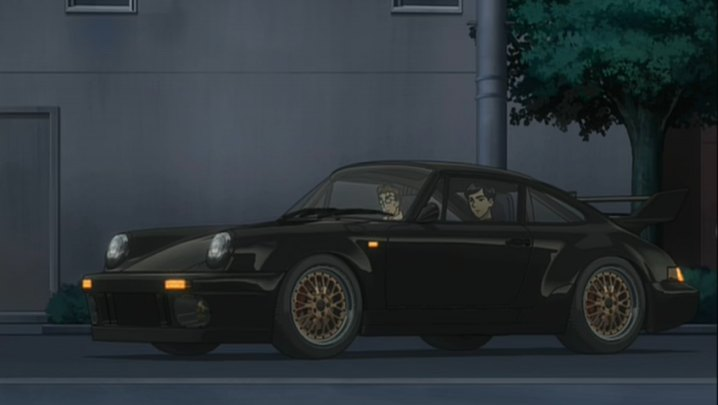
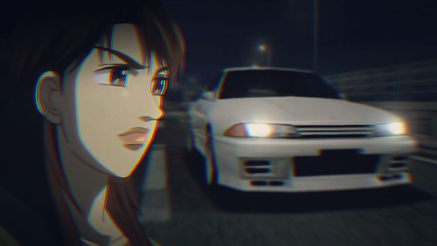

WANGAN MIDNIGHT
Wangan Midnight
Wangan Midnight (japonês: 湾岸ミッドナイト, Hepburn: Wangan Middonaito) é uma série de mangá de corrida japonesa
escrita e ilustrada por Michiharu Kusunoki. Foi serializado pela primeira vez na Big Comic Spirits da
Shogakukan em 1990, mas mais tarde foi serializado na Weekly Young Magazine da Kodansha de 1992 a 2008. O
mangá foi compilado em 42 volumes publicados pela Kodansha. Uma segunda série de mangá intitulada Wangan
Midnight: C1 Runner foi publicada de 2008 a 2012. Uma terceira série de mangá, Ginkai no Speedstar, foi
publicada de 2014 a 2015. Uma quarta série de mangá, Shutoko SPL - Ginkai no Speedster, começou em 2016.
A série foi adaptada para vários filmes de ação ao vivo, videogames e uma série de anime para televisão. O
anime foi transmitido no Japão de junho de 2007 a setembro de 2008 na rede de televisão por satélite Animax,
animada pela A.C.G.T e produzida pela OB Planning.
Em 1999, Wangan Midnight ganhou o Prêmio Kodansha Manga na categoria Geral.
Os dois carros mais famosos do Anime:
| 1 Nissan Fairlady Z S30 "Devil Z" |
| 2 Porsche 911 930 "Blackbird" |
| 3 Toyota Surpra Mk4 JZA80 "Monster Machine" |
| 4 Nissan Skyline GTR R32 |
1° Nissan Fairlady Z 1969 "Devil Z"

- O Nissan Fairlady Z S30 é um dos carros icônicos do anime "Wangan Midnight", que se destaca pela sua
aparência distintiva e pelo desempenho emocionante nas corridas de alta velocidade nas estradas
expressas de Tóquio. No anime, o Fairlady Z S30 é retratado como o carro principal de Akio Asakura, o
protagonista.
O Fairlady Z S30, também conhecido como Datsun 240Z fora do Japão, ganhou fama por seu design esportivo
e suas características técnicas impressionantes para sua época. No contexto do anime, ele é representado
como um carro extremamente veloz e ágil, perfeito para as batalhas contra outros pilotos habilidosos que
competem nas rodovias noturnas de Tóquio.
2° Porsche 911 930 "BlackBird"

- O Porsche 911 930 é um dos carros de destaque, conhecido principalmente pelo seu
design característico e pelo desempenho excepcional nas corridas de rua noturnas. No contexto da série,
o
Porsche 911 Turbo (930) é pilotado por Tatsuya Shima, apelidado de "Blackbird"
O Porsche 911 Turbo 930 é uma versão especial do icônico Porsche 911, conhecido por seu motor
turboalimentado e sua capacidade de aceleração impressionante. No anime, o carro de Tatsuya Shima é
representado com detalhes que capturam sua potência e agilidade nas estradas de Tóquio, onde as corridas de
alta velocidade são uma forma de expressão competitiva e de habilidade entre os pilotos.
-
Assim como outros veículos no universo de "Wangan Midnight", o Porsche 911 930 não é apenas um meio de
transporte, mas uma extensão da personalidade de seu piloto. Tatsuya Shima é retratado como um piloto
habilidoso e determinado, e seu Porsche 911 Turbo 930 reflete essa determinação e paixão pelo
automobilismo.
3° Toyota Surpra Mk4 JZA80 "Monster Machine"

- Keiichiro Aizawa (também conhecido como "Kei" nos jogos) é o personagem que dirige o Supra RZ/Supra Twin
Turbo, apelidado de "Máquina Monstro" (モンスターマシン Monsutā Mashin?) Afinado por Kou Tominaga, Kazuo Ota,
Kazuhiko Yamamoto e Akio Asakura. Depois de conhecer Blackbird, Kei decidiu persegui-lo.
Seu desejo de correr e sua escolha de carro foram inspirados por seu pai, Koichi Aizawa, que dirigia um
Mk.II Celica Supra e foi morto por um motorista bêbado 15 anos antes do anime ser ambientado.
Ele trabalha em um clube anfitrião para financiar suas atividades de corrida e tem amigos do ensino
médio que o incentivam a deixar para trás as perigosas corridas de alta velocidade de Wangan.
-
Depois de perder a corrida contra o Devil Z e o Blackbird devido à instabilidade estrutural, Kei largou
o emprego e concordou em deixar os sintonizadores desafinarem seu motor de 800 HP para 400 HP. Os
afinadores também pintaram seu Supra com a mesma prata de seu pai.
4° Nissan Skyline GTR R32

-
Sua primeira aparição é em Wangan Midnight Volume 1 Capítulo 3 (episódio 03 do anime; "The Girl in the
GT-R"), onde os espectadores podem ver que ela está dirigindo um Nissan Skyline BNR32 GT-R cinza (que
então se transforma em branco após o arco Perfect GT-R), tornando-a uma das poucas mulheres piloto.
-
Uma modelo sofisticada e personalidade de TV que é co-apresentadora de um programa de automobilismo
chamado "Drive Go-Go!" ao lado de Koichi Kijima, e anteriormente um dos principais rivais de Akio, ela
fica deprimida com a forma como expulsou outras pessoas de sua vida em sua busca original pela fama. Ela
guarda sua tristeza e frustração durante o dia, filmagem após filmagem, até que possa sair do trabalho e
dirigir seu GT-R na rodovia Wangan para desabafar. Encontrando-se bastante deprimida, ela se apaixona
pelo Devil Z depois que ele a ultrapassa na estrada tarde da noite, após uma filmagem. Ela segue Akio
até um estacionamento, onde rouba o Z, do qual agora ela se sente obcecada por dirigir. Mais tarde, ela
encontrou o Devil Z e o Blackbird em uma corrida e decide participar, mas seu carro subvira e bate em um
guardrail. Após este incidente, ela se contenta em apenas seguir os outros pilotos sem tentar assumir a
liderança. Seu GT-R é ajustado por Kazuhiko Yamamoto. Por medida de segurança é equipado com rollcage e
posteriormente repintado de branco para ficar mais visível aos demais carros. Akio é seu principal
interesse amoroso e ele também pode nutrir sentimentos por Reina.
-
No Volume 14, é revelado que o clube R200, que sempre quis vencer os pilotos mais rápidos para se
tornarem famosos, tentou vencer Reina, Shima e Akio. Mas foi só para eles descobrirem que o alvo é o
jogador, pelo menos nos jogos. Mas no final eles falharam, nem JPP Sonoda conseguiu ver Reina por perto.
No filme live action, ela é vista dirigindo um Nissan GTR (R34) em vez do (R32) que ela dirige no anime
e mangá.
-
Seu desejo de correr e sua escolha de carro foram inspirados por seu pai, Koichi Aizawa, que dirigia um
Mk.II Celica Supra e foi morto por um motorista bêbado 15 anos antes do anime ser ambientado.
Ele trabalha em um clube anfitrião para financiar suas atividades de corrida e tem amigos do ensino
médio que o incentivam a deixar para trás as perigosas corridas de alta velocidade de Wangan.